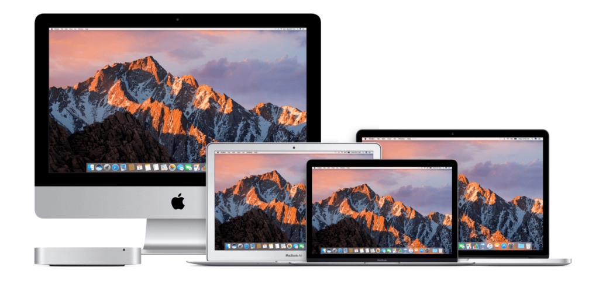

Geeked Computers ‐ Northwest Ohio
We offer an extensive range of computer repair and diagnostic services, all designed to give you peace of mind. Whether you have a virus, system running slow, or just not turning on, we can help you with that. We will inform you ahead of time of the estimated cost of repair and a time frame. If more resources are required or the time frame changes, we will notify you immediately.
We realize your computer is essential to you, so we work hard at diagnosing the problem and fixing it in the most non-invasive way possible. Also, we will always recommend anything your computer needs with a detailed explanation.
We Repair Apple Products!
Many computer repair shops either repair windows or repair apple; at Geeked Computers, we have tied the knot with this dilemma and can repair both. So you can come to us with all your computer needs! We work on Mac desktops, MacBooks, and Ipads.
Upgrades
Technology is forever changing, making it difficult for your system to have some of the latest technology. Now you don’t have to buy new, just bring your current desktop or laptop in, and we can see what types of upgrades we can do on your system to having it working at full capacity and running similar to newer devices.